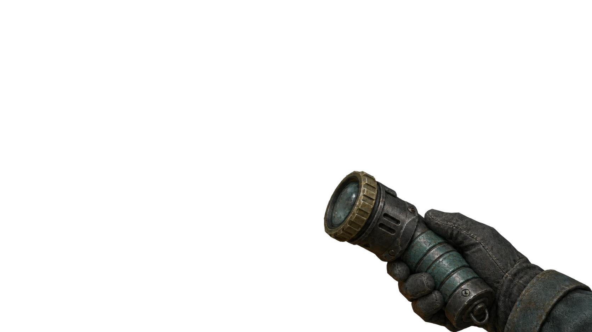

SUMP / 0700:10
EMERGENCY DRAIN / LOWER LEVEL
손전등으로 압력 밸브를 찾으세요
시점을 돌려 밸브를 비춘 뒤 점검하세요.
W 전진 · A/D 시점 · 마우스/터치로 조준 · E 점검 · F 빛

EMERGENCY DRAIN / LOWER LEVEL
시점을 돌려 밸브를 비춘 뒤 점검하세요.
W 전진 · A/D 시점 · 마우스/터치로 조준 · E 점검 · F 빛